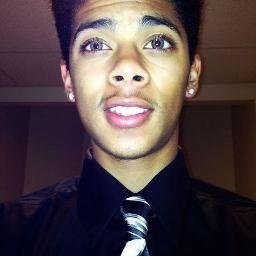

Wyjdź za mnie
MÓJ PROFIL
EDYTUJ DANE
WYLOGUJ
TWOI ZNAJOMI
Czarek Gdybał
Moje motto brzmi: "Afekty, chociaż będą święte, rozumem mają być ujęte". Jestem intelektualistą o niewybrednym poczuciu humoru oraz wysokiej inteligencji społecznej. Szukam kobiety, która będzie ze mną aby gotować i prać mi ubrania.
Napisz

Darek Otwórz
Jestem studentem, pracuję zaocznie jako konserwator powierzchni wklęsłych, aczkolwiek nie lubię wklęsłości. Planuję rozpocząć karierę weterynarza bo kiedyś widziałem poród krowy w tv.
Napisz
Krystian Bober
Podobno wyglądam jak profesor niczego, ale tak naprawdę jestem mechanikiem samochodowym. W tym momencie mieszkam w lesie ponieważ tylko tam mogę być naprawdę sobą.
Napisz
Marek Cukierek
Jestem nieśmiałym amerykańskim przedsiębiorcą, pracuję dorywczo w Biedronce oraz prowadzę hodowlę jaszczurek. Lubię kobiety o wyrafinowanym poczuciu humoru lub nie.
Napisz